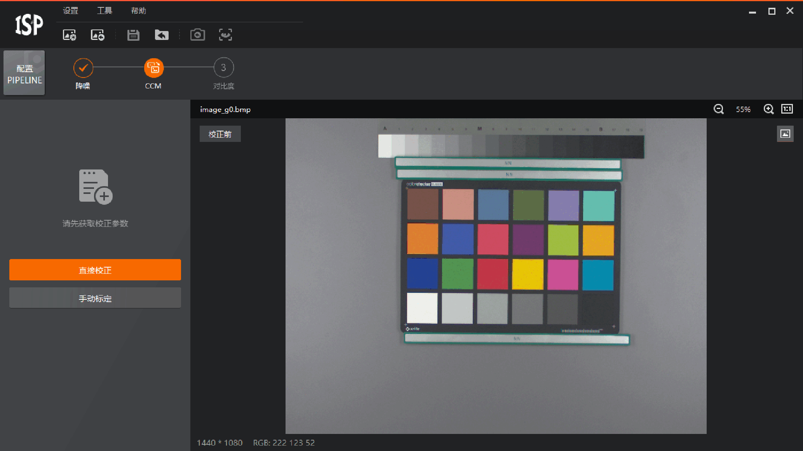
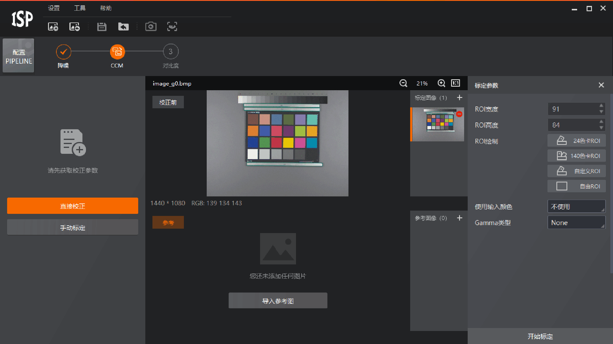
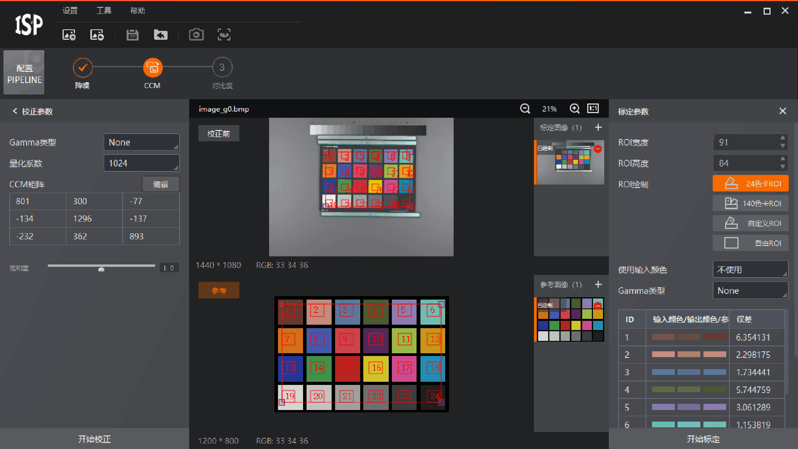
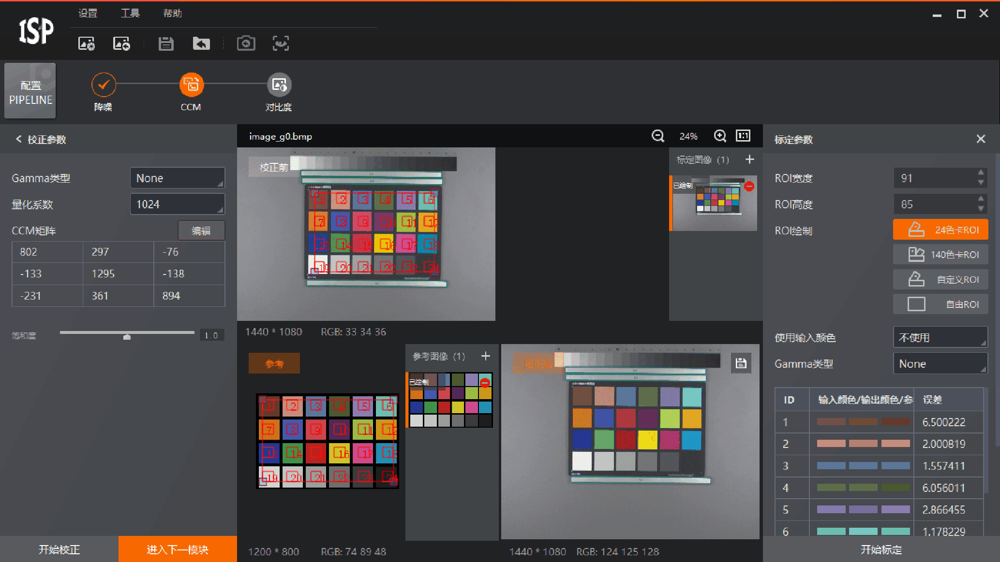

ISPTool支持通过手动标定以获取校正参数。
校正前需完成图像导入和Pipeline配置。
Pipeline配置完成后将自动进入第一个模块操作界面。
Pipeline中的算法模块需按照从左至右的顺序依次操作。

图 1 手动标定
图 2 导入参考图操作参考图的命名规则与导入的原图类似，具体可查看本地图像导入章节。
不同算法模块支持的ROI类型及标定参数有所不同，具体请查看各算法模块介绍章节。

图 3 标定结果关于是否包含标定功能以及是否支持标定文件导出，不同算法的情况不同，请以具体参数为准。

图 4 标定参数校正结果进入下一模块后，已完成校正的模块会显示。